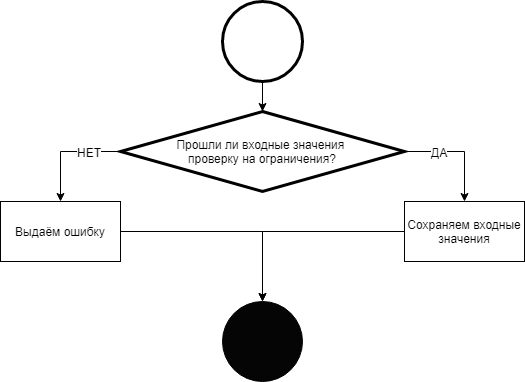
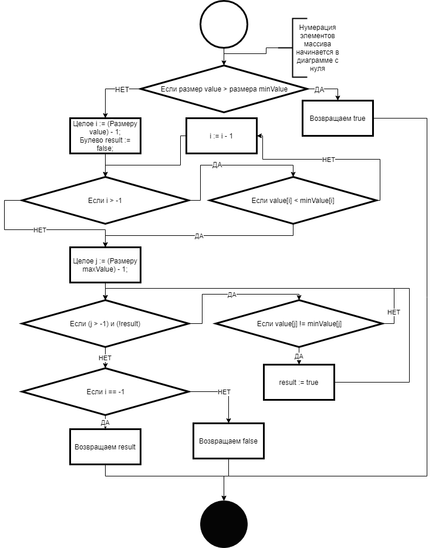
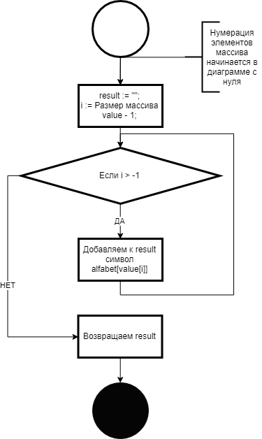

Статья рассматривывает алгоритм перебора по алфавиту. Статья является основой для классов программ для Полного перебора по алфавиту и с его использованием. Полный перебор по алфавиту представляет собой выдачу строк от начальной позиции до конечной из символов, заданных в начальном алфавите. Приведены примеры реализации на языке Java.
Перебирать так же можно не только строковые значения, но и другие типы данных.
Рассмотрим на примере этого алфавита пример полного перебора по алфавиту.
Анимация. 1. Пример алгоритма полного перебора по алфавиту, без расширения границ при переполнении.
Примеры значий шагов алгоритма:
Таблица 1. Пример шагов алгоритма.
Шаг
Значения индексов
Буква по индесу
1
0000
AAAA
2
0001
AAAB
3
0002
AAAC
4
0003
AAAD
5
0010
AABA
6
0011
AABB
...
...
....
X
2330
CDDA
X+1
2331
CDDB
...
...
...
N-1
3332
DDDC
N
3333
DDDD
Шаги алгоритма получения следующего элемента:
Входные данные: алфавит, минимальное значение, максимальное значение.
В конструкторе инициализируем начальное значение массива текущего элемента — value.
1. В массиве value содержаться индексы элементов алфавита. Увеличивываем на один значение первого элемента в массиве.
2. В цикле просматривываем каждый элемент массива value с первого элемента:
2.1. Если значение элемента массива больше последнего элемента, то сбрасывываем его значение на нуль и увеличивываем значение следующего элемента на один.
2.2. Переходим к следующему элементу и проделывываем для него пункт 2.1.
2.3. Если при посмотре текущего последнего элемента массива value не хватило элемента для переноса, то просто создаём этот элемент.
2. Блок-схема алгоритма.
Приведём блок-схемы для всего процесса генерации. Алгоритм содержат следующие функции:
Конструктор — отвечает за инициализацию начальных значений при начале перебора.
hasNext — метод для проверки наличия следующего значения.
hasPrevious — метод для проверки наличия предыдущего значения.
next — метод для перевода состояния в следующее значение перебора.
previous — метод для перевода состояния в предыдущее значение перебора.
getValue — метод для получения значения текущего элемента.
2.1. Блок-схема конструктора.
Входные данные: minValue — нижняя граница перебора, maxValue — верхняя граница перебора, alphabet — алфавит для перебора.
Выходные данные: value — текущее значение (копия minValue), сохранённая minValue, сохранённая maxValue, сохранённый alphabet.

Рис. 2. Блок-схема конструктора.
2.2. Блок-схема метода hasNext.
Входные данные: minValue — нижняя граница перебора, maxValue — верхняя граница перебора, value — текущее значение, alphabet — алфавит для перебора.
Выходные данные: Значение Истина или Ложь для ответа на вопрос "Есть ли следующий элемент?".
Рис. 3. Блок-схема метода hasNext.
2.3. Блок-схема метода hasPrevious.
Входные данные: minValue — нижняя граница перебора, maxValue — верхняя граница перебора, value — текущее значение, alphabet — алфавит для перебора.
Выходные данные: Значение Истина или Ложь для ответа на вопрос "Есть ли предыдущий элемент?".

Рис. 4. Блок-схема метода hasPrevious.
2.4. Блок-схема метода next.
Входные данные: minValue — нижняя граница перебора, maxValue — верхняя граница перебора, value — текущее значение, alphabet — алфавит для перебора.
Выходные данные: перевод состояния value.
Рис. 5. Блок-схема метода next.
2.5. Блок-схема метода previous.
Входные данные: minValue — нижняя граница перебора, maxValue — верхняя граница перебора, value — текущее значение, alphabet — алфавит для перебора.
Выходные данные: перевод состояния value.
Рис. 6. Блок-схема метода previous.
2.6. Блок-схема метода getValue.
Входные данные: minValue — нижняя граница перебора, maxValue — верхняя граница перебора, value — текущее значение, alphabet — алфавит для перебора.
Выходные данные: Преобразование value в строку символов.

Рис. 7. Блок схема метода getValue.
3. Пример на Java.
Пример реализации полного перебора по афавиту на языке Java 12 SE.
public Bruteforce(String alphabet, ArrayList<Integer> minValue, ArrayList<Integer> maxValue) {
/* Переменные с префиксом this - это защищённые поля класса. Без префикса - параметры конструктора. */
// Запоминаем алфавит.
this.alphabet = new ArrayList<Character>();
for(int i = 0; i < alphabet.length(); i++)
this.alphabet.add(alphabet.charAt(i));
// Проверка на то, что размер minValue меньше или равно maxValue.
if(minValue.size() < maxValue.size()) {
// Запоминаем начальное и конечное значения.
this.minValue = minValue;
this.maxValue = maxValue;
this.value = (ArrayList<Integer>) minValue.clone();
}
else {
if(minValue.size() > maxValue.size())
throw new IllegalArgumentException();
for(int i = 0; i < maxValue.size(); i++) {
if(minValue.get(i).intValue() < maxValue.get(i).intValue())
break;
if(minValue.get(i).intValue() > maxValue.get(i).intValue())
throw new IllegalArgumentException();
}